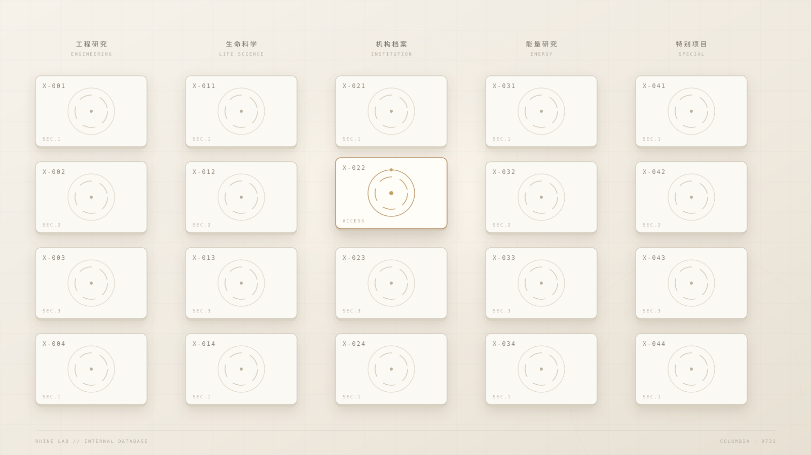

RHINE LAB
莱茵生命 // INTERNAL DATABASE
RESEARCHER / 研究员
研究员 07
观测中
X-031
今晚的观测记录
LOCAL TIME
21:04:12
LIVE
1080P60

SPECIMEN FEED / 样本影像
NO SIGNAL
在 OBS 中将游戏采集放置在此区域
观测记录
OBSERVATION LOG
LOG.03
SECURED
FANS / 粉丝数
7-18 · 观测
PLAYS / 播放数
0
LIKES / 获赞数
12MS
POPULARITY / 人气值
12,480
+2.4%
ARCHIVE BRIEF / 档案简报
今晚的观测记录
莱茵生命 · 内部资料档案 · 观测记录
ELAPSED00:00:00
FANS0
POPULARITY0
NOW PLAYING ON
生命流
塞壬唱片 · MSR
LAB NOTICE
DB.OK
RHINE LAB v1.0
ROOM 7355608
RHINE LAB
INTERNAL DATABASE // 内部资料档案
COLUMBIA // 0731000